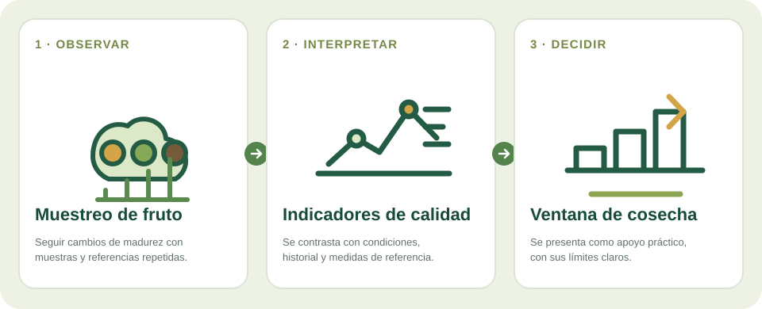

Cómo funciona
Se toman muestras representativas en fechas sucesivas, se mide un parámetro con un sensor o método adecuado y se compara con una referencia de laboratorio. Un modelo puede ayudar a seguir tendencias una vez validado para ese producto.
Medidas repetidas durante la campaña pueden ayudar a entender cómo evoluciona la calidad y cuándo conviene intensificar el muestreo.
Investigación y calibración específica por productoCómo puede convertirse una señal en información útil

La fecha de recolección depende de varios factores: variedad, destino del producto, clima, manejo y criterios de calidad. Un solo indicador rara vez cuenta toda la historia.
Se toman muestras representativas en fechas sucesivas, se mide un parámetro con un sensor o método adecuado y se compara con una referencia de laboratorio. Un modelo puede ayudar a seguir tendencias una vez validado para ese producto.
Apoyar decisiones de muestreo y planificación de recolección con datos de la propia campaña. Una publicación experimental ha evaluado espectros visibles e infrarrojos para estimar madurez y sólidos solubles en piña; es evidencia de una aplicación específica, no garantía de precisión equivalente en otros frutos.
La espectroscopia se ha estudiado para estimar indicadores de madurez en frutas concretas. Cada resultado debe entenderse para la especie y el método evaluados; no prueba una precisión equivalente en cultivos del Altiplano.
Servicio estacional para productores, almazaras o cooperativas que necesiten comparar lotes y planificar cosecha. El producto inicial debe comprometerse con una medida concreta y mostrar cómo se obtuvo.
“Azúcar”, “grasa” o “madurez” no son una única medida universal. Sensores espectrales requieren calibrarse por cultivo, variedad, instrumento y rango de muestras frente a métodos de referencia. La decisión final combina calidad objetivo, condiciones de campo y criterio técnico.
Visita la app agroclimática o vuelve a las líneas de investigación para conocer el resto de áreas.
La información de esta página describe una línea de investigación o desarrollo; no supone que exista un producto validado para todos los cultivos. Toda orientación técnica se contrasta con datos de campo y asesoramiento profesional cuando procede.